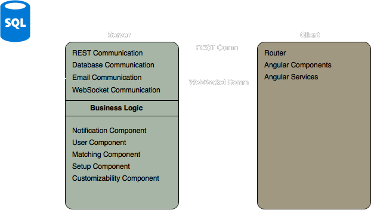
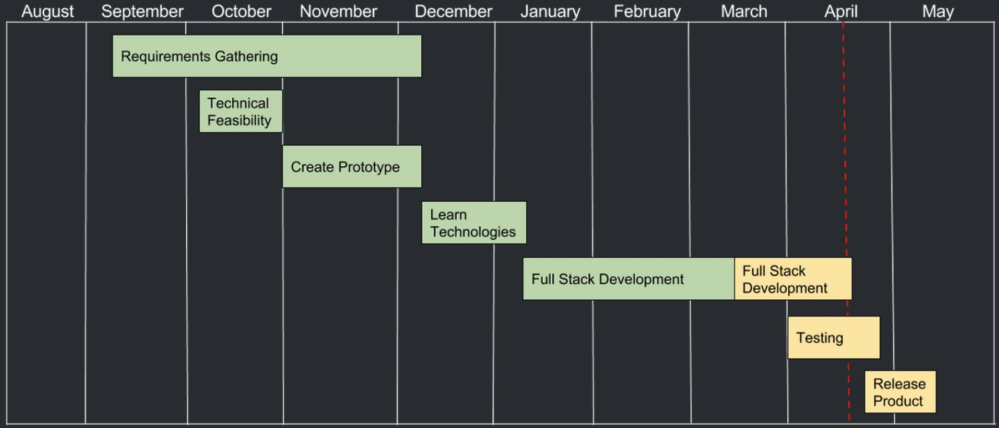

About the Project
Project Description
FlagFriends is a local non-profit international student and community friendship program based in Flagstaff. FlagFriends started ten years ago, with the goal to give international students at NAU a chance to learn more about American culture and interact with American families. The program consists of matching students with families in the local community of Flagstaff to share experiences and culture. The program currently follows an entirely manual workflow requiring much time and effort to keep running. This is compounded by having only one maintainer of the program, Joy Knudsen. Our solution is to create a general purpose Web matching application that we are calling Groupwise that will automate the FlagFriends program and streamline its manual workflow. Groupwise will allow potential students and hosts to create accounts and interact with each other using a simple web application. With Groupwise, we envision having the potential to provide similar organizations the same matching process by offering customization of the application. Groupwise will change the way FlagFriends operates, giving our client more time to focus on marketing and expanding the program allowing more students and hosts to participate. For more information, visit capstone project proposal.
Project Requirements
For our project we met weekly with our sponsor in order to gather requirements to be able to provide a viable solution to their specific problem. During this process we were able to narrow our high level requirements down to the following five requirements. For a more complete understanding of our project's requirements check out our requirements document in the Assignments section or click here.
- Student and host account registration/management
- Host to student matching
- Notifications
- Administrator reporting
- Webpage Customization
Architecture Overview
Our application takes on a more 3 tier architecture style, with the separation of the presentation, business logic, and data layers. The application will employ a number of communication methods in order to allow communication between these different tiers. These include REST communication, database communication, SMTP communication, WebSocket communication, and SQL communication. Much of our underlying business logic is split into separate components (or modules), these include: user module, notification module, matching module, setup module, permissions module, customizability module, and reporting module. Each underlying business logic module will hook into one or more communication method in order to achieve its purpose. Many of the modules will interact with each other through publicly available methods. By allowing cross-module communication we can allow for more flexibility in our architecture. Each module has a compliment on the Angular front-end side of the application as well that will allow for the visual representation of the module. In this case, we leverage AngularJS 2’s built in constructs to componentize our application. In this way, we can provide components that are rendered, services that communicate with the backend, and models which help with data transfer and consistency between the business logic and presentation tiers.

Technologies
- Frontend - Angular 2
- Bootstrap
- Socket.IO
- Backend - NodeJS
- Express
- SequelizeJS
- Socket.IO
- MariaDB (MySQL Implementation)
- DigitalOcean hosting
- Namecheap domain registration
- Zoho mail hosting
Project Plan
To ensure that the project is completed on time. We are using Agile/Scrum methodology, breaking our project into sprints. These sprints together make several milestones that help to track the progress of the project.
Milestones
- Authentication
- Customization
- Profile views and editing
- User-to-user chat Matching
- Reporting
- User management
- Testing/Bugfixes
Schedule
Demo
Want to try our project out? Check out the new and improved FlagFriends.org website!